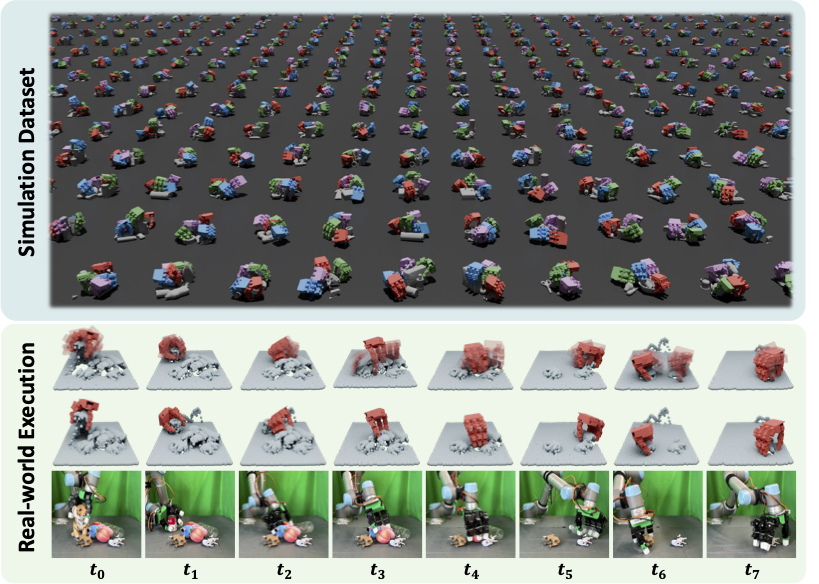
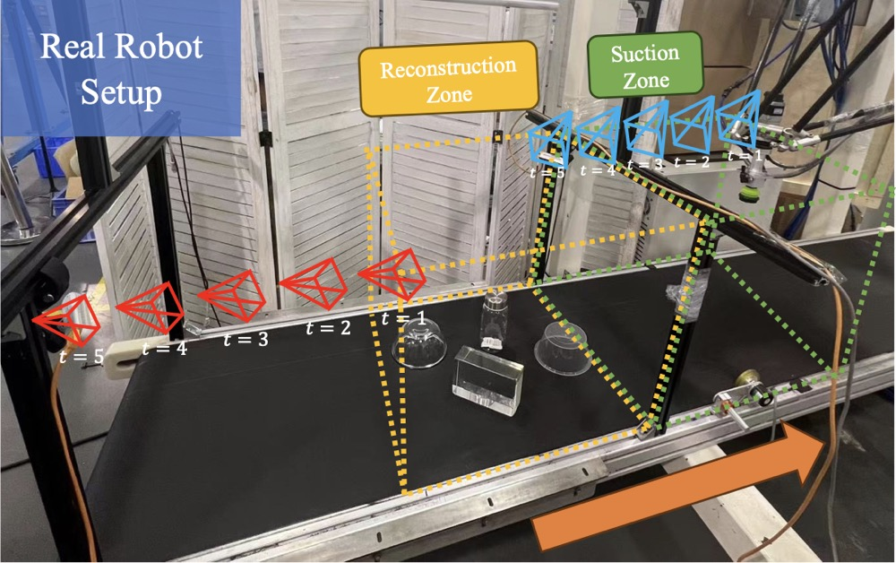
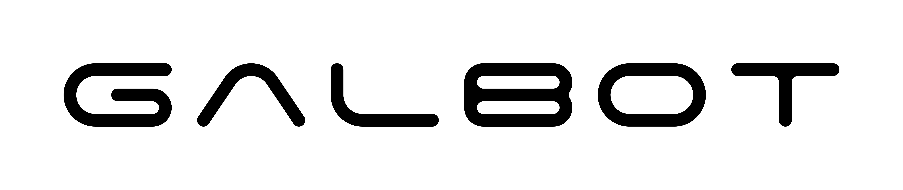

|
Danshi Li I am a research engineer at Galbot, Led by Prof. He Wang, Dr. Zhizheng Zhang and Prof. Li Yi. I obtained Master's degree from New York University and Bachelor's at CUHK. Previously I interned at GalBot and the EPIC Lab at Peking University, advised by Prof. He Wang |
{kind=link}
ResearchI am interested in learning generalizable, dexterous interactions between robot and the real world. Up to now, my works have been concentrated on the methodology of training in simulation and transferring to real world. Recently I take great interest in the theory of geometric farics and its applications in RL, e.g. in dexterous hand manipulation and dexterous grasping . Looking for interested partners to work together! |
|

|
DexGraspNet 2.0: Learning Generative Dexterous Grasping in Large-scale Synthetic Cluttered Scenes
Jialiang Zhang*, Haoran Liu*, Danshi Li*, Xinqiang Yu*, Haoran Geng, Yufei Ding, Jiayi Chen, He Wang CoRL 2024 website / arxiv / paper We build a large-scale dataset of 429M dexterous grasping poses in 7500 cluttered scenes with benchmark simulation pipeline. Based on the abundance of data, we learn a generative dexterous grasp prediction model that efficiently leverage local geometric features. Our model achieves 90.7% success rate, and show strong robustness under downscaling of training dataset. |
|

|
STOPNet: Multiview-based 6-DoF Suction Detection for Transparent Objects on Production Lines
Yuxuan Kuang*, Qin Han*, Danshi Li, Qiyu Dai, Lian Ding, Dong Sun, Hanlin Zhao, He Wang ICRA 2024 arXiv a framework for 6-DoF object suction grasp detection on production lines with generalizable NeRF reconstruction, with a focus on but not limited to transparent objects. |
Work Experience |
 |
EPIC lab, Peking University
2022.03 - Present Instructor: Prof. He Wang |
|  |
Galbot
2023.08 - 2024.07, Research Intern 2024.07 - Present, Research Engineer Instructor: Prof. He Wang, Dr. Zhizheng Zhang |
Education |
|
New York University
2022.09 - 2024.06 Master Student in Electrical and Computer Engineering |
|
|
the Chinese University of Hong Kong
2017.09 - 2022.07 Undergraduate Student in Mathematics |